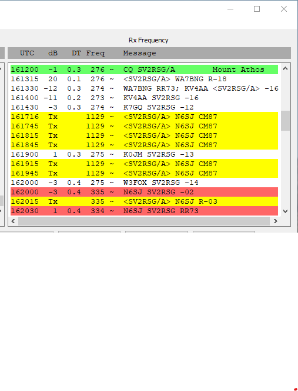

Awesome, Steve!!!! You now have a very merry Christmas and I still have a sack of coal!! I am very happy for you and hope you did not trip and fall doing your ‘happy dance’! So, what is next?? Vy 73, Al N6TA From: Chat <chat-bounces@ncdxc.org> On Behalf Of Steve Jones via Chat OK, my best DX of 2021 was Mount Athos, SV2RSG/a. I have been chasing that country for 20 years, ever since Monk Apollo became active. No joy until this morning, thanks to the "Killer Spot" from Paul N6PSE, as passed on via landline by John K6YP. Vy 73 to all! Steve N6SJ  > On Dec 16, 2021, at 2:48 PM, Paul N6PSE via Chat <chat@ncdxc.org> wrote: > > > 2021 was an interesting year. What was your best DX? > > I worked a ton of new entities on Digital (FT8) for the first time, > but I think my best DX was SV2RSG/A Mount Athos on 20 FT8 and 40 FT8. > > During this year, I also worked EP2LSH, SU1SK, YI3WHR, JY4IB and ST2NH on FT8 for new digital entities. Oh and XW0LP on 80 meters for a minor miracle. I think he was QRP. > > C92RU on 80 meters FT8 and A25RU on 80 CW were also quite memorable. There was ZC4GR on 15 meters FT8, 3A/MM0NDX on 40 SSB and 3A/G4PVM on 20 CW were highlights as well. > > > > What was your best DX of 2021? > > > Paul N6PSE > > > _______________________________________________ > Chat mailing list > http://mail.ncdxc.org/mailman/listinfo/chat_ncdxc.org _______________________________________________ Chat mailing list |